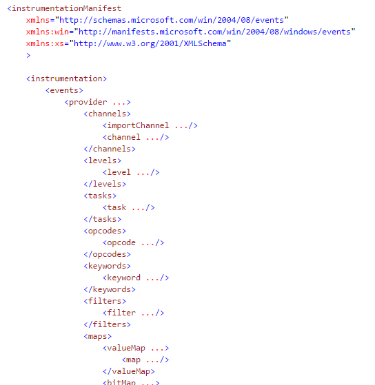

.NET applications production profiling
Rail Sabirov
How we are profiling on dev enviroment?
- run some cool profiler!
- make some load
- analyze results in beautiful profiler UI
Why production profiling harder?
- we can not reproduce prod issue on dev environment
- we should not affect running instance (stop or slow down)
- we have to collect environmental information (cpu, memory, disk io, hard faults, network io...)
- we can not install profiler
Event Tracing for Windows (ETW)
- Symantic logging (each event and source has schema)
- Fast if enabled
- Doesn't affects performance if disabled
- Can drop events if "performance not enough"
- Used internally in Windows
- Used in .NET CLR (provides detailed info about CLR, JIT, GC...)
- Introduced on Windows 2000 (Windows Vista)
ETW Architecture overview

ETW Components
- event provider
- writes events to ETW sessions (it can be any user-mode application, managed application, driver etc)
- event consumers
- application that reads log files or listens to a session for real time events and processes them
- controller
- starts and stops ETW sessions and enables providers to them.
- event trace session
- actual logging and buffering on separate kernel thread per session
Demo 0
PerfView tool overview
How to create events source?
just create 100 line xml schema
Easier way for creating events source
Demo 1, 2, ...
Best practices
- Use primitive types if possible
- Use IsEnabled function if calculation of values for event takes memory/cpu
- Create separate EventSource for highly detailed logging
Best practices
Check ConstructionException at least on Debug configuration
#if DEBUG
if (MinimalEventSource.Log.ConstructionException != null)
throw MinimalEventSource.Log.ConstructionException;
#endif
Who else uses ETW?
Who else uses ETW?
Who else uses ETW?
Tools
- PerfView (http://aka.ms/PerfView)
- Logman.exe - command-line controller (Technet article)
- tracerpt.exe - a general consumer tool (Technet article)
- Windows Performance Analyzer (WPA) is a tool that creates graphs and data tables of ETW
- Xperf actions are trace processing components that collate event information to produce text reports
- Even google has own ETW tool :) https://github.com/google/UIforETW
Usefull links
What remains out of scope of this presentation?
- Memory profiling
- Controlling sessions using .NET
- Collecting events using .NET
- Cool tools around ETW